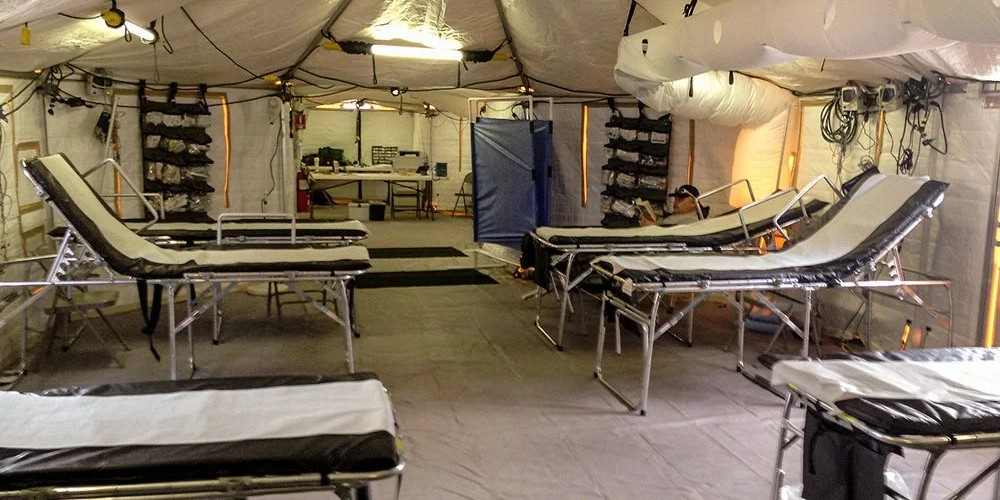
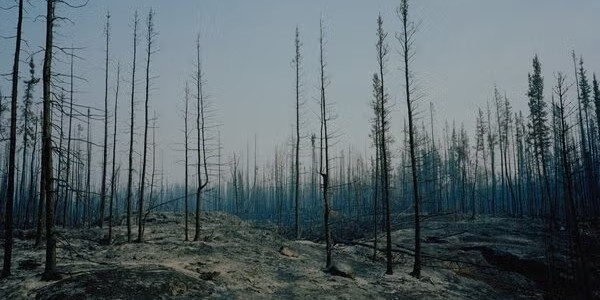

ZENCHOU — A week ago, the tournament grounds between the Western Forest and the Kiseki Academy dorms were a place of spectacle. Today they are a field of craters, collapsed stands and rubble... and, for the first time since the calamity, a place where the wounded are actually being looked after.
It was not the city that came for them.
While the local government continues to struggle with the fallout of the outbreak, it has been the Sternritter, working alongside the Noragami under the shared banner of the Sanmittai, who have set up relief tents on the ruined grounds. When High Stakes Media arrived on scene, their people had already been at it for hours. Plain-clothed soldiers moved through the crowds, survivors who could not walk on their own were being carried in, and the dead that had gone unrecovered since last week were finally being found.
What We Saw
The relief effort is, to put it plainly, unlike anything a conventional hospital could offer.
Katia Ferrari, First Daughter of Casa Ferrari and Knight of the Constellation Virgo, was distributing loaves of bread imbued with a rejuvenating effect. Her unit handed it out among the crowds. It is not simply a matter of feeding people, though they are doing that too... It is a way of administering aid to a great many people at once, and those who ate it were visibly the better for it.
Inside the tents, a Noragami doctor known as Uchu was treating survivors with threads of spiritual energy. We watched as a line of ordinary residents, people with no spiritual reserves of their own, stood before her with limbs that had been lost in the incident and were now regrown. She worked until her own reserves were nearly spent, and then kept working.

Others did the less glamorous work. Volunteers handed out jars of ointment to the treated so their recovery could continue at home. Diana Swarovski, Page of the Constellation Cancer, walked the grounds bringing in those who could not reach the tents themselves. A young man named Noah Vandham spent the afternoon clearing debris and recovering bodies.
In Their Own Words
Ferrari agreed to speak with High Stakes Media at the relief site.
"In the wake of the local government's own struggles, we have quickly sought to provide relief to the thousands imperiled by the tragedy that transpired here," she said, adding that between the Sternritter and the Noragami, their organizations hold the foremost knowledge in handling and repelling the entity known as Null.
She made clear this was not a one-day effort. "Starting now, and for the foreseeable future, we will be providing relief services to those requiring medical services, treatment, or any other form of relief from the pestilence, or from any ordeal transpiring upon Zenchou soil."
Naturally, we asked about the labels. The Sanmittai have been called a foreign terrorist organization, a criminal one, and by some, a cult. Ferrari did not flinch at the question... though cult did seem to catch her off guard.
"I will not tell anyone that we have been gentle," she said. "We of the Sternritter are an organization founded in conflict, and in answering the strife born of spiritual phenomena. But the truth remains that we exist to serve our fellow man."
She went on to describe Zenchou as a city "dying of its own neglect," its protective wards torn down by its own agents of strife. And she addressed directly the bounty placed upon both her and Doctor Uchu by the Inquisition, which she attributes to their exorcism of a Devil that had consumed a number of people, a man of the Edelweiss Family among them. According to Ferrari, that Devil had been kept as something of a pet by the city's Executive Branch.
"I do not ask anyone to trust my word," she said. "Witness us, instead."
To the Sanmittai's detractors, she extended the same offer as everyone else: security or healing, without distinction.
"I do not ask anyone to trust my word. Witness us, instead." — Katia Ferrari
The Question of Responsibility
This reporter put a harder question to Ferrari: if the Sternritter are so practiced in purging Null, why did they not move against the Koyomi Party before it came to this?
She turned the question back around, and fairly so. A foreign organization marching on a party seated in the city's own government, she asked, and what would we be calling them then?
"This is not a failure of the Sanmittai," Ferrari said. "It belongs to those who hold this city in governance - who allowed the Koyomi Party to thrive." She warned that even with the Koyomi Party diminished, she fears the tools it engineered will continue to be used by those who remain in power.
She did not excuse her own side entirely. "Had we been swifter in unveiling the nature of their machinations, and their manipulation of the pestilence, we might have been able to prevent this," she admitted, and described it as a debt she carries personally.
High Stakes Media will say it plainly. It was never the job of a foreign order of knights to rein in the Koyomi Party. It was the job of the Government, the people who claim to represent Zenchou and it's best interests. They did not do it, and the devastation here at the tournament grounds is the result.
A Word for City Hall
When asked what she would say to the new joint leadership of the mayor's office, Ferrari had a pointed message for Ji-Hua, hoping that she does not follow her predecessors in their "rambunctious nature" and "abrupt departures," along with condolences to Hiroshima. She also noted, dryly, how curious it is that two contracted entities have come to hold the reins of the very city that hired them.
On whether Zenchou can recover, though, she was more hopeful than one might expect from someone who had been on her feet since dawn.
"The city will recover," she said. "Not because the government will allow it, but because, as people tend to do, they will refuse anything less."
Know the Signs: Null

For our readers who live or work near affected areas, the people on the ground shared some guidance on how to recognize Null:
- Your Sixth Sense will not find it. Null does not register to spiritual perception. It spreads through an area quietly, and unless enough has gathered to create a noticeable deadzone, it is hard to detect until it is too late.
- Look for absence. The best visual tell is an area where Reishi simply is not, where there should be normally always be some.
- Trust your nose. Null can be smelled. It burns going into the nostrils, much like a spice. If you notice it, leave the area, and do not breathe in more than you must.
Anyone injured in the incident, or affected by Null since, can seek treatment at the relief tents on the former tournament grounds.
The Bottom Line
It would be easy to read the Sternritter's presence here as a public relations campaign, and in part maybe it is.
But public relations does not regrow a man's arm. It does not carry the injured in from the crowd, or recover the dead that the city left lying in the rubble for a week. Whatever you make of the Sanmittai, they asked to be judged by what they do. On the tournament grounds, at least, what they are doing is the work the city would not.
The question now is whether Zenchou's leadership will be shamed into doing its share... or whether the people will have to keep relying on outsiders to do it for them.
High Stakes Media will continue to follow the recovery effort, as well as the government's handling of the recent incident involving Akiko. Tips can be sent to %Gambling_Queen on SuperNat.